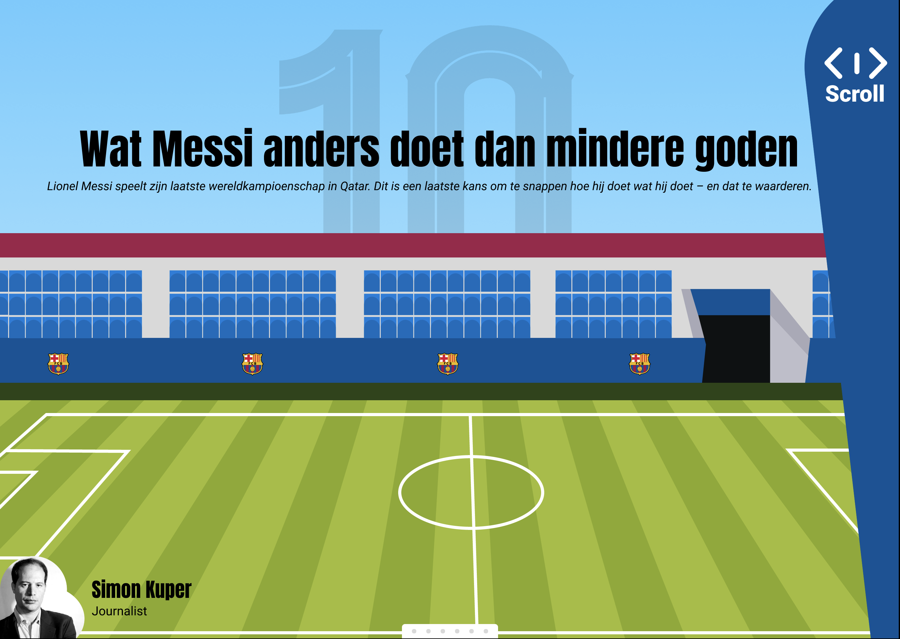

Je ontwerpt een visuele interface voor 1 van de casussen en laat in deze interface jouw persoonlijke visie als ontwerper zien. Ook pas je de kennis van de verschillende vakken van de minor toe. Je kunt voor de uitwerking van de interface kiezen voor: het maken van een prototype in een prototyping tool of het maken van een prototype in html/css. Ik heb ervoor gekozen om een artikel vorm te geven en om mij te focussen op het maken val illustraties.
Naar prototypeDesignrationale
Mijn persoonlijke visie op de interface die ik heb ontworpen is dat deze zo eenvoudig en intuïtief mogelijk moet zijn voor de gebruiker. Dit betekent dat de interface helder en overzichtelijk is, zodat de gebruiker op een gebruiksvriendelijke manier door het verhaal heen scrolt.
Om wat ik heb geleerd tijdens deze minor toe te passen heb ik ervoor gekozen om een artikel van “de correspondent” om te zetten in een leuk visueel verhaal. Ik heb leerdoelen gekozen die ik leuk vond om te doen en graag nog beter in wil worden. Zo heb ik zelf veel illustraties gemaakt bij mijn artikel om het verhaal echt tot leven te brengen omdat het een saai vormgegeven artikel was wat door de schrijfstijl zeer geschikt was het op vorm te geven op de manier hoe ik dat heb gedaan. Door te experimenteren met lay-outs en technieken heb ik dit verhaal weergegeven in een horizontale scrol wat naar mijn mening het meest geschikt is voor dit artikel.
Ik ben zeer tevreden met de uitkomst van het proces. Het proces was uitdagend en ik heb veel geleerd over hoe ik illustraties binnen dezelfde stijl (inclusief achtergronden) maak en hoe ik dit weergeef aan de lezer.
